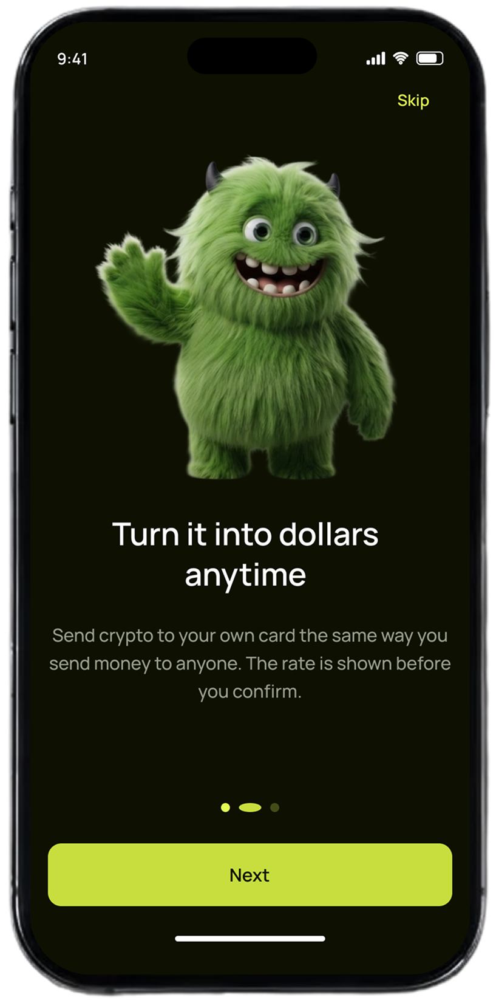
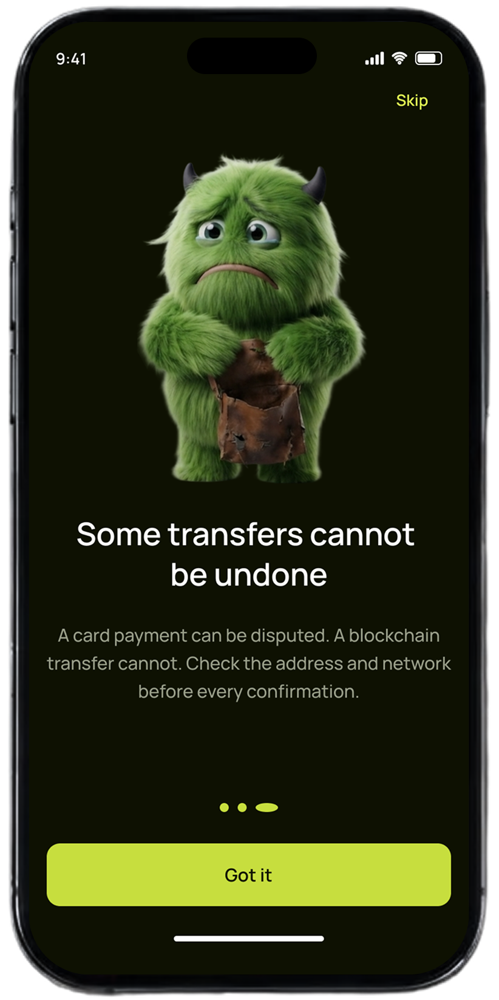
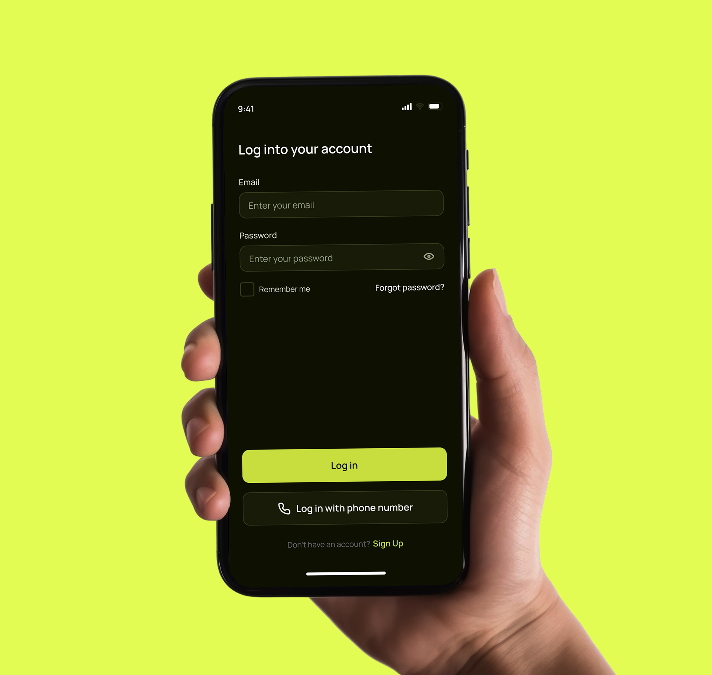
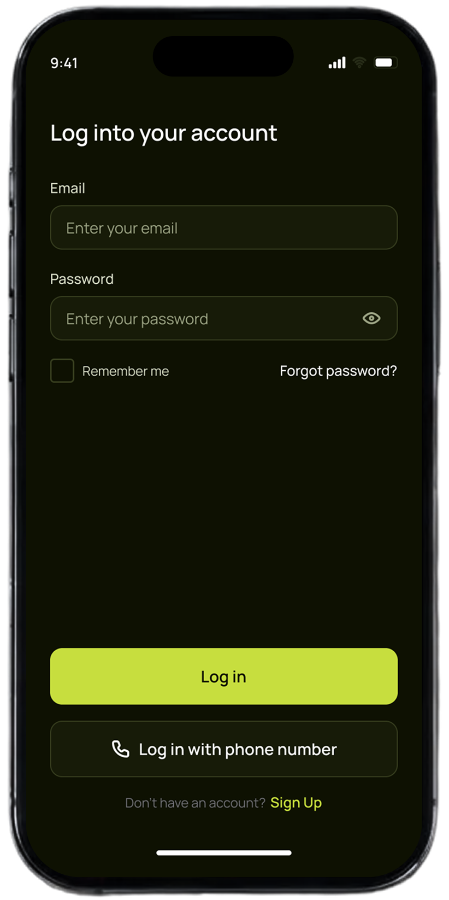
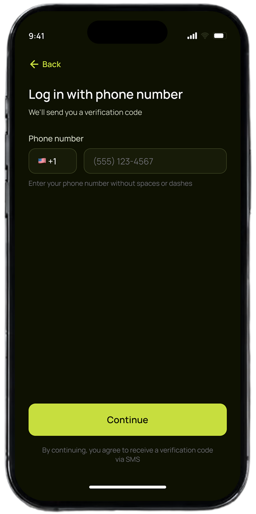
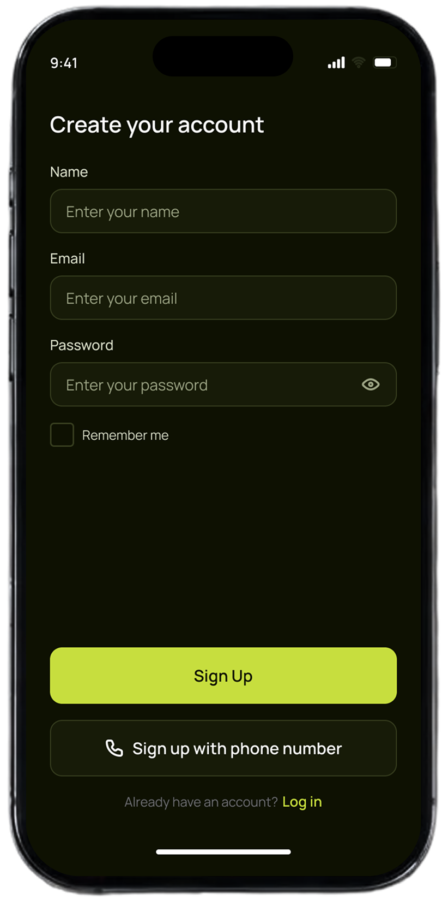
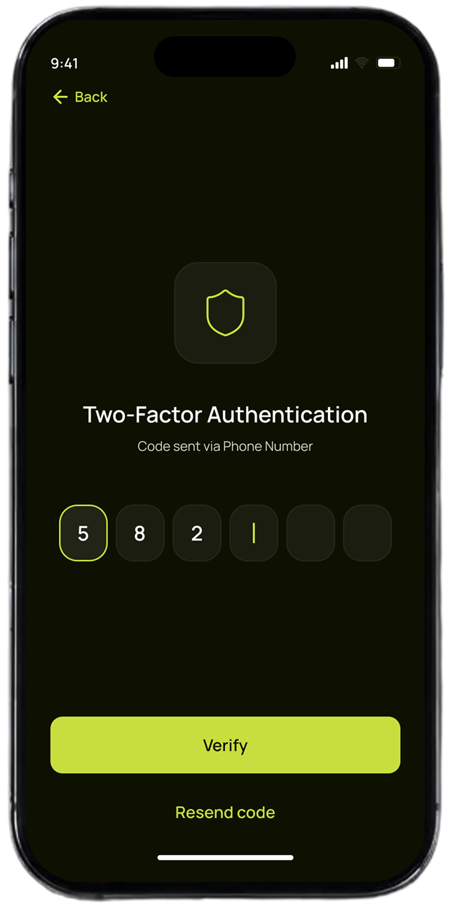

Alex Johnson
“My salary is paid in cryptocurrency, so I had to use third-party services to convert it to USD myself.”
A corporate mobile app that pays employees in crypto. Staff are onboarded through an admin panel where their documents, personal data, and payroll are managed, and salaries are automatically credited to a crypto account.
Each employee activates their account with credentials provided by the company, tracks their balance, and can convert crypto to dollars directly inside the app.
Design a mobile wallet that makes complex financial operations feel approachable for users with different levels of financial literacy.
Created a scalable mobile experience covering onboarding, account creation, wallet management and core transaction scenarios.
The onboarding goal was to explain the product value before asking users to create an account.
We reduced onboarding to three messages focused on user benefits rather than product features.


Turning product requirements into clear user flows, interaction logic, and design priorities — creating a solid foundation for the final experience.


Twelve participants aged between 21 and 52 years took part in the survey.
“My salary is paid in cryptocurrency, so I had to use third-party services to convert it to USD myself.”
“Managing my salary in cryptocurrency has been quite challenging. I often struggle to understand how to use it effectively, and most apps feel complicated and overwhelming to me.”
Qualitative market research questions are the most effective interviews to understand how your target demographic thinks, feels, and why they make certain choices.



